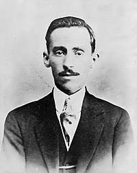

Psicologia de um Vencido
Eu, filho do carbono e do amoníaco,
Monstro de escuridão e rutilância,
Sofro, desde a epigênese da infância,
A influência má dos signos do zodíaco.
Profundissimamente hipocondríaco,
Este ambiente me causa repugnância...
Sobe-me à boca uma ânsia análoga à ânsia
Que se escapa da boca de um cardíaco.
Já o verme — este operário das ruínas —
Que o sangue podre das carnificinas
Come, e à vida em geral declara guerra,
Anda a espreitar meus olhos para roê-los,
E há-de deixar-me apenas os cabelos,
Na frialdade inorgânica da terra!
Augusto dos Anjos